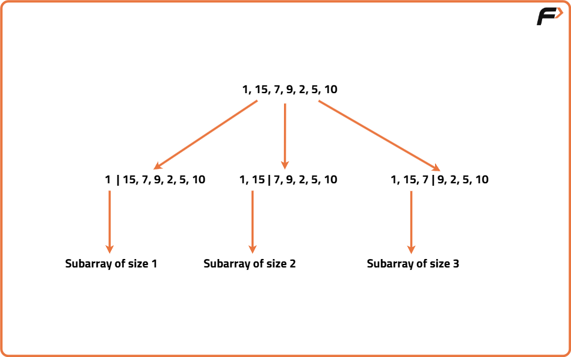

Partition Array for Maximum Sum | Front Partition : DP 54
Problem Description: Given an integer array arr with length n, and an integer k, you may partition arr into one or more contiguous sub-arrays, where each sub-array has length in the range [1, k] (both inclusive).
After you pick a partition, replace every element in each sub-array with the maximum value found in that sub-array. The array is modified in-place for the purpose of computing the total. Return the largest possible sum of the entire array after performing exactly one such partition-and-replace operation.
Examples
Input: arr = [1,15,7,9,2,5,10], k = 3 Output: 84 Explanation: The partition will be the following to get the largest sum: [1, 15, 7 | 9 | 2, 5, 10]. After replacing the elements of each subarray with its maximum, the array will look like this: [15,15,15,9,10,10,10] and the sum will be 84. Input: arr = [2,2,2,2], k = 2 Output: 8 Explanation: Partition as [2,2 | 2,2]; each sub-array’s max is 2. The array stays [2,2,2,2] and the sum is 8.
Disclaimer: Here is the practice link to help you assess your knowledge better. It's highly recommend trying to solve it before looking at the solution.
Memoization
Algorithm
The problem asks us to partition the array into contiguous sub-arrays, each of length at most k, and then replace all elements in each sub-array with the maximum element of that sub-array to maximize the total sum. Since every partitioned sub-array affects the total sum by its maximum value multiplied by the length of that sub-array, the key insight is to explore all valid partitions while keeping track of the maximum values and sums. This can be effectively done using dynamic programming by considering every possible sub-array ending at each index and choosing the best partition to maximize the sum so far.
We want to partition the array into contiguous sub-arrays of length at most k to maximize the sum after replacing each sub-array with its maximum element. A natural way to think about this is recursively: starting from the beginning of the array, try all possible sub-array lengths up to k. For each choice, find the maximum value in that sub-array, calculate the sum contributed by replacing all its elements with that max, then recursively solve the problem for the rest of the array. By caching results for each starting index, we avoid redundant calculations and optimize the recursion.
We want to partition the array into contiguous sub-arrays of length at most k to maximize the sum after replacing each sub-array with its maximum element. A natural way to think about this is recursively: starting from the beginning of the array, try all possible sub-array lengths up to k. For each choice, find the maximum value in that sub-array, calculate the sum contributed by replacing all its elements with that max, then recursively solve the problem for the rest of the array. By caching results for each starting index, we avoid redundant calculations and optimize the recursion.

- Define a recursive function that takes the current start index as a parameter.
- If the start index reaches the end of the array, return 0 since no elements remain.
- Use a memo array to store and reuse results for each start index to avoid recomputation.
- Initialize variables to track the maximum sum for the current start index and the max element in the current sub-array.
- Iterate over all possible sub-array lengths from 1 to k (ensuring not to exceed array bounds).
- Update the max element for the current sub-array as you iterate.
- Calculate the sum contributed by the current sub-array as product of max element and length plus the recursive call result for the next start index.
- Store the maximum sum found in the memo for the current start index and return it.
Code
#include <bits/stdc++.h>
using namespace std;
class Solution {
private:
// Recursive helper function to find max sum from 'start' index
int helper(const vector<int>& arr, int k, int start, vector<int>& memo) {
int n = (int)arr.size();
// Base case: if start reached end, no elements left to partition
if (start == n) return 0;
// Return cached result if already computed for this start index
if (memo[start] != -1) return memo[start];
int maxSum = 0;
int maxElem = 0;
// Try partitions of length 1 to k starting at 'start'
for (int length = 1; length <= k && start + length <= n; length++) {
// Update max element for this partition length
maxElem = max(maxElem, arr[start + length - 1]);
// Calculate current sum: maxElem * length + recursive result for remaining array
int currentSum = maxElem * length + helper(arr, k, start + length, memo);
// Update maxSum if current partition leads to higher sum
maxSum = max(maxSum, currentSum);
}
// Memoize and return the best max sum for this start index
return memo[start] = maxSum;
}
public:
// Public function to initiate recursive memoization
int maxSumAfterPartitioning(vector<int>& arr, int k) {
int n = (int)arr.size();
// Initialize memo array with -1 to indicate unvisited states
vector<int> memo(n, -1);
// Start recursion from index 0
return helper(arr, k, 0, memo);
}
};
int main() {
vector<int> arr = {1, 15, 7, 9, 2, 5, 10};
int k = 3;
Solution sol;
cout << "Maximum sum after partitioning: " << sol.maxSumAfterPartitioning(arr, k) << "\n";
return 0;
}
Complexity Analysis
Time Complexity: O(N*K), there are total N states, where N is the length of array and for every state we check all subarrays of length K.Space Complexity: O(N) + O(N), we use a DP array to avoid recomputation. Extra auxiliary stack space is used for recursion.
Tabulation
Algorithm
In order to avoid extra recursive stack space used in memoization approach, we can simply convert our solution into tabulation approach. We can follow these steps in order to form our tabulation solution:
- Identify the state variable used in memoization (start index of the array).
- Create a DP array where dp[i] stores the maximum sum achievable from index i to the end.
- Initialize dp array with base case: dp[n] = 0 (when start index is at the array's end).
- Fill the dp array from the end (index n-1) towards the start (index 0).
- For each index i, consider all sub-arrays of length 1 to k starting at i.
- For each sub-array, find the maximum element, then update dp[i] with the maximum of current dp[i] and max_element * sub-array_length + dp[next_start].
- After filling dp, the answer will be dp[0], representing the maximum sum after partitioning the whole array.
Code
#include <bits/stdc++.h>
using namespace std;
class Solution {
public:
// Function to find maximum sum after partitioning
int maxSumAfterPartitioning(vector<int>& arr, int k) {
int n = (int)arr.size();
// DP array to store max sum from index i to end
vector<int> dp(n + 1, 0);
// Iterate from right to left over the array
for (int i = n - 1; i >= 0; i--) {
int maxElem = 0;
int maxSum = 0;
// Check all partitions of length 1 to k starting at i
for (int length = 1; length <= k && i + length <= n; length++) {
// Update maximum element for current partition
maxElem = max(maxElem, arr[i + length - 1]);
// Calculate sum if partition ends here
int currentSum = maxElem * length + dp[i + length];
// Update maxSum if currentSum is greater
maxSum = max(maxSum, currentSum);
}
// Store maximum sum for subarray starting at i
dp[i] = maxSum;
}
// Return max sum achievable starting at index 0
return dp[0];
}
};
int main() {
vector<int> arr = {1, 15, 7, 9, 2, 5, 10};
int k = 3;
Solution sol;
cout << "Maximum sum after partitioning: " << sol.maxSumAfterPartitioning(arr, k) << "\n";
return 0;
}
Complexity Analysis
Time Complexity: O(N*K), there are total N states and for every state we check all subarrays of length K.Space Complexity: O(N) , we use a DP array to store previously calculated results and avoid recomputation.